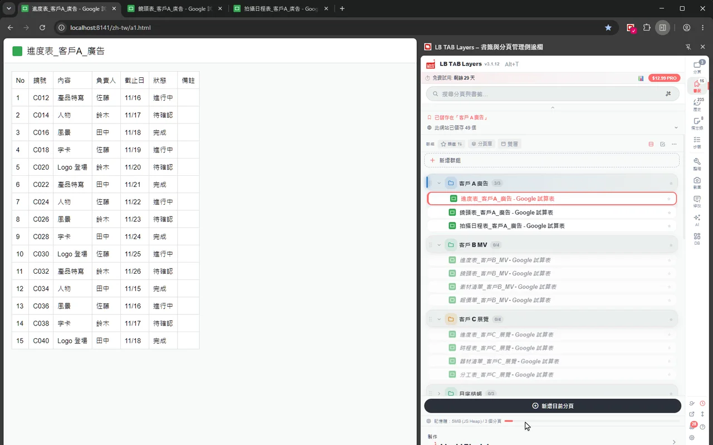
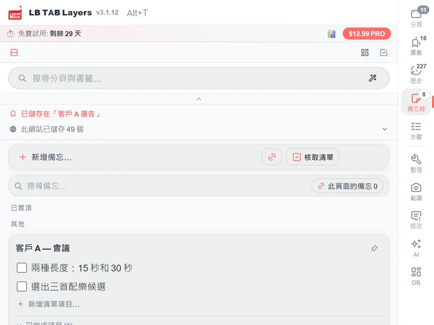
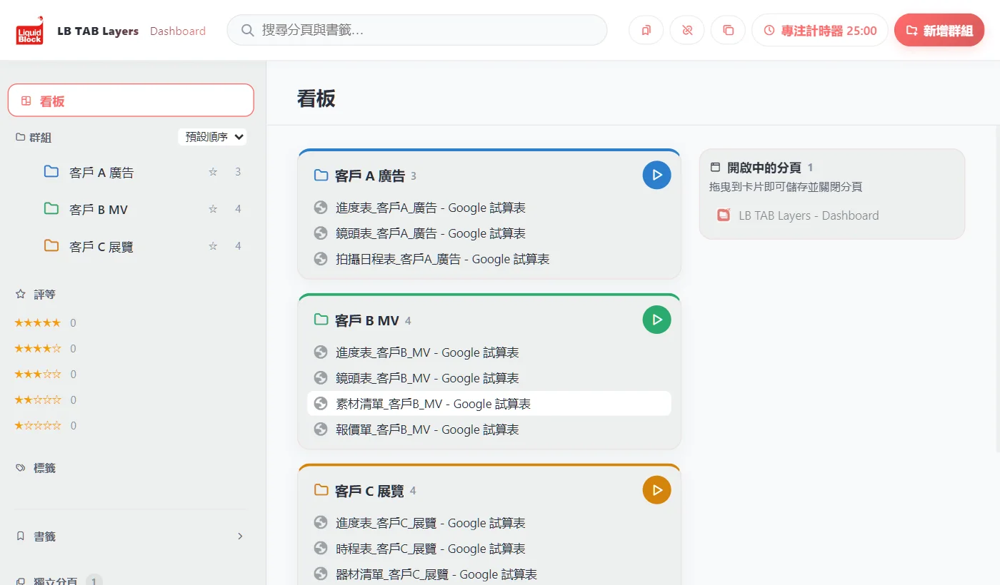
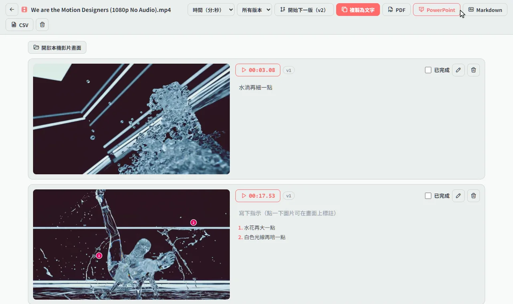

那個網頁，
到底在哪裡？
- 一直開著怕關了就找不回來，所以不敢關。
- 找個不停每天花 5 分鐘、10 分鐘，在分頁海裡找。
- 全部不見電腦變慢，重新啟動後，分頁全沒了。
手一直在忙，工作卻沒有進展。
這種時間，不用再花了。
手一直在忙，工作卻沒有進展。
這種時間，不用再花了。
之後要用的，收進抽屜。
要做的事，和要留著的東西。
光是分開，腦袋就輕鬆了。

把用完的分頁一次全部關閉。
把專案的分頁一次全部開啟。
輸入幾個字，網頁就出現。

瀏覽器旁邊，一直是同一個畫面。
上面是書籤，下面是目前的分頁。
不用來回切換，全部都看得到。
按 Alt+T，在任何網頁都能開啟。

收起來的地方，就是 Chrome 書籤。
所以，可以放心關掉。
來自 Chrome Web Store 的評論（譯自日文）
工作上暫時會用到的網站可以整理在一起，覺得很方便。 可以整個群組一次關掉，這點很棒。 比一個一個加書籤輕鬆多了。
以前不知不覺就開了多到誇張的分頁，要找想看的網頁很辛苦。 介面很好懂，我覺得不擅長整理的人也能輕鬆使用。
總想著「分頁開太多，電腦會變慢」，卻一直放著不管。這個也許就是解決辦法。 把東西分進資料夾，心情也跟著清爽，感覺很好。
每次只要幾秒。可是一天要做幾十次。
省下來的時間，就用來思考吧。
這是開啟電腦裡的影片檔時的畫面。在 YouTube 上也是一樣的操作。
不用重新上傳影片，直接寫在瀏覽器裡正在看的影片上。支援 YouTube、Vimeo、Google Drive，以及嵌入網頁的影片。
這是一家影像製作公司，為了自己的修改溝通而做的。
一開始，只用分頁和書籤就夠了。
需要更多的時候，它就在旁邊。



用得越多，獎牌累積越多。第一次操作時，還有小小的慶祝。
安裝後馬上就能用。
儲存的位置，就是你的 Chrome 書籤。
全部功能先用 30 天，再決定。2026 年 12 月 31 日（日本時間）前購買，付款一次即為永久授權。

Liquid Block 是一家製作影片和動態圖像的工作室。企劃用的資料、線上工具、各式各樣的 AI。在製作現場，分頁多到滿出來。
尋找、重新開啟、重新製作。不想讓這些事占掉思考的時間， 所以我們為自己做了這個工具。
可以。儲存、搜尋、一次全部開啟和關閉，都可以免費使用。前 30 天可以試用所有功能。PRO 可以在 30 天試用後再決定。2026 年 12 月 31 日（日本時間）前購買，$12.99（未稅）付款一次即為永久授權。自 2027 年 1 月 1 日起，PRO 將改為自動續訂的訂閱制（3 年 $39.99・1 年 $19.99・每月 $3.33，未稅）。
可以照常使用。Chrome 的書籤可以直接匯入並整理。
儲存的分頁會以 Chrome 書籤的形式留下。主題、顏色等設定會消失。
可在 Google Chrome（114 以上版本）使用，支援 Windows、Mac、Linux 和 ChromeOS。Edge 版正在準備中。